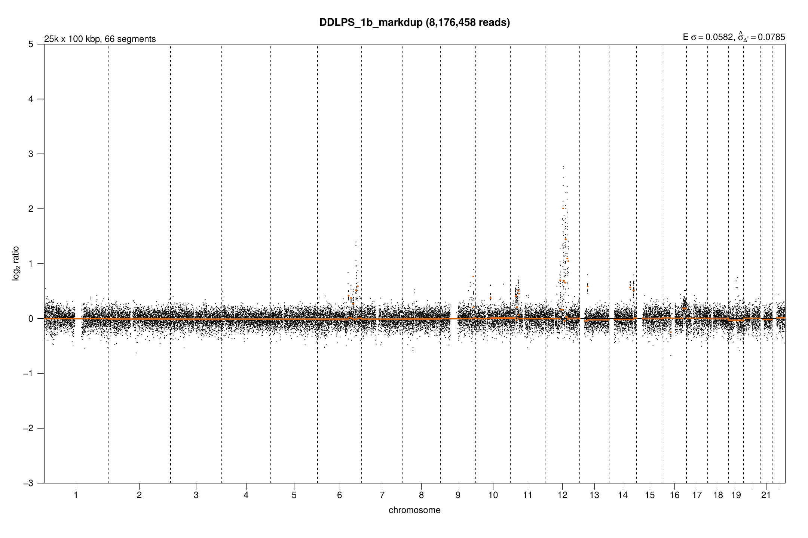
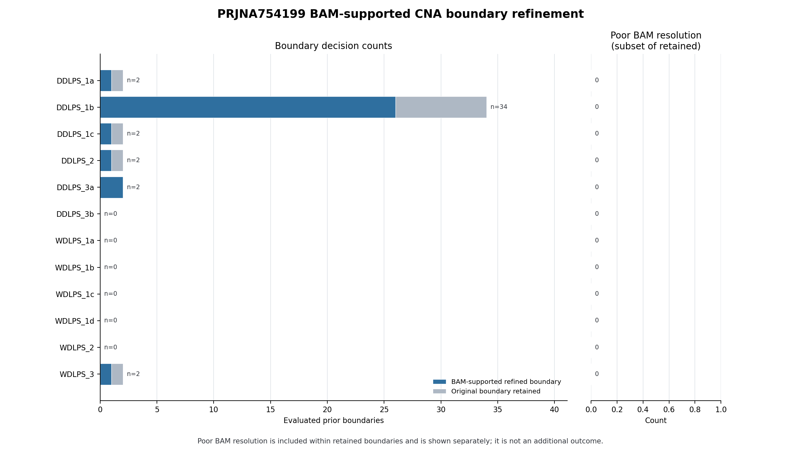
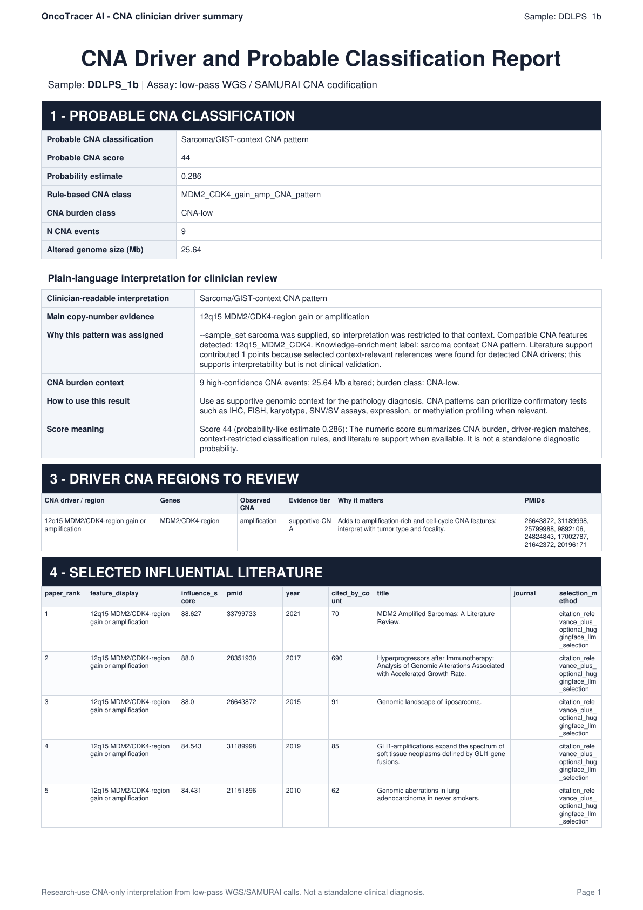

Full tutorial: complete public PRJNA754199 archive¶
This tutorial processes all 12 Illumina plasma cfDNA libraries currently exposed by the public PRJNA754199 archive. The main path is intentionally short: download validated reads, let OncoTracer generate the samplesheet and YAML, run the workflow, verify the outputs, and review the reports.
{kind=link}
Follow the numbered sections in order. The YAML connects preparation to the real analysis by saving the checked inputs, selected settings, and result folder. Select a linked diagram or terminal image below to open it full size.
What this tutorial does—and does not—contain¶
The associated PLOS ONE article describes 41 plasma specimens from 15 patients: 10 longitudinal specimens from four DDLPS/WDLPS patients and 31 specimens from 11 patients with other soft-tissue tumors. On 15 July 2026, the ENA read-run report returned only 12 read runs for the BioProject.
| Public archive snapshot | Value |
|---|---|
| Public runs processed here | 12 |
| Layout | single-end |
| Instrument and read length | Illumina HiSeq 2500, 36 bp |
| Deposited reads | 266,097,582 |
| Deposited bases | 9,579,512,952 |
| Compressed download | 6,171,900,300 bytes (5.75 GiB) |
| Reference/caller | hg38, SAMURAI/qDNAseq, 100 kb |
Ten archive aliases correspond to the article's primary serial-sampling set. The additional aliases WDLPS_2 and WDLPS_3 are not reconciled to rows in the article supplement. None of the 31 other-tumor specimens is currently present in the read archive. One deposited run, DDLPS_2, contains 8,351,915 reads and is therefore below the article's general 10-million-read description.
Archive aliases are not diagnoses
DDLPS_* and WDLPS_* are sample names supplied with the public files. OncoTracer keeps those names but does not independently verify a diagnosis. The generated tumor status is a workflow label for this patient cohort, not proof of detectable ctDNA, active disease, or a CNA in any specimen.
This is an independent reanalysis, not an exact reproduction of the publication. The publication used GRCh37/hg19, a Plasma-Seq Z-score method, variable-mappability windows, and healthy-donor references. This tutorial uses OncoTracer's hg38 SAMURAI/qDNAseq route and has no matched tumor or healthy-donor controls.
1. Plan the run¶
Use Linux with at least 150 GiB of free working space. Sixteen CPU cores and 64 GiB RAM are a practical starting point. The first run also prepares hg38 and its BWA index; that one-time step adds several GiB and can take 30–60 minutes before alignment begins.
Complete the host installation requirements, then clone OncoTracer. This tutorial uses /home/student/oncotracer as an example location. student is only an example Linux username; if pwd shows a different location, replace /home/student/oncotracer in the commands below with that location.
If OncoTracer is already cloned, skip the first command and enter the existing repository.
git clone https://github.com/cfarkas/oncotracer.git /home/student/oncotracer
cd /home/student/oncotracer
pwd
The remaining commands use /home/student/oncotracer/test for the reads, generated setup files, temporary work, and final results. OncoTracer creates the required subdirectories automatically.
2. Prepare the software¶
Prepare and check Docker without starting an analysis:
nextflow run /home/student/oncotracer/main.nf --install --docker \
--lpwgs_root /home/student/oncotracer/test \
-work-dir /home/student/oncotracer/test/work/install
This command pulls and checks the software, records the selected runtime and SAMURAI version, and then stops. It does not download hg38 or patient reads and does not create analysis stages 01–06. See Installation for Singularity and Conda alternatives.
3. Download and validate the complete public archive¶
Download all 12 FASTQs with one resumable command:
bash /home/student/oncotracer/examples/prjna754199/run_example.sh --download-only
This command creates /home/student/oncotracer/test/public/prjna754199, downloads the 12 FASTQ files, and checks their file sizes, MD5 checksums, and gzip contents. It also places samples.csv in the same folder. A completed file is reused if the command is run again, and an interrupted download can continue. No analysis starts yet.
{kind=link}
A complete download ends with this summary. DOWNLOAD and REUSE lines above it are both normal. If the command stops before the summary, run the same command again.
For the exact URLs, checksums, archive search, and download checks, see the example README and archive details.
4. Generate the samplesheet and YAML automatically¶
The download command created samples.csv. This small file lists each sample name and marks it as TUMOR for the workflow. You do not need to write the larger workflow samplesheet or YAML by hand. Run Automatic Setup:
nextflow run /home/student/oncotracer/main.nf --auto_params \
--mode illumina \
--reads_folder /home/student/oncotracer/test/public/prjna754199 \
--sample_table /home/student/oncotracer/test/public/prjna754199/samples.csv \
--auto_config_dir /home/student/oncotracer/test/configs/prjna754199 \
--auto_outdir /home/student/oncotracer/test/runs/prjna754199 \
--run_cna_classifier true \
--cna_classifier_sample_set sarcoma \
--pathology_use_biomed_models false
This command prepares the run; it does not process the reads. OncoTracer:
- reads the 12 names in
samples.csv; - finds the matching FASTQ for each name;
- checks that every file uses the supported single-end name and that each gzip file can be read;
- creates the samplesheet and YAML required by the analysis command; and
- records where the final results should be saved.
List the two generated files:
ls -1 /home/student/oncotracer/test/configs/prjna754199
{kind=link}
Automatic Setup has prepared the 12-sample run but has not analyzed the reads. The samplesheet connects each sample to its FASTQ; the YAML stores the paths and analysis choices used in the next section.
The four path options have distinct purposes:
| Option | Meaning |
|---|---|
--reads_folder |
The existing folder that contains the downloaded FASTQ files. |
--sample_table |
The existing samples.csv file that connects each sample name to its workflow status. |
--auto_config_dir |
The folder where OncoTracer creates illumina.samplesheet.csv and illumina.auto.yml. |
--auto_outdir |
The folder where the next, real analysis command will save BAMs, CNA tables, plots, and reports. Automatic Setup creates it if needed and records it in the YAML, but does not put analysis results in it yet. |
The generated files are:
/home/student/oncotracer/test/configs/prjna754199/
├── illumina.auto.yml
└── illumina.samplesheet.csv
illumina.samplesheet.csv contains one row per sample and the full path to its FASTQ. Its fastq_2 column is empty because these reads are single-end. illumina.auto.yml contains the settings and paths used by the next command. The classifier is enabled, but no pathology file is supplied, so the reports contain CNA-only research interpretation rather than a pathology comparison.
5. Run the analysis¶
Start the real 12-library analysis:
nextflow run /home/student/oncotracer/main.nf --docker \
-params-file /home/student/oncotracer/test/configs/prjna754199/illumina.auto.yml \
-work-dir /home/student/oncotracer/test/work/prjna754199 \
-resume
Keep the terminal open while this command runs. It performs alignment, CNA analysis, boundary refinement, plotting, and report generation. The first run also prepares the hg38 reference, so it can take several hours. -resume lets the same command continue from completed steps after an interruption.
6. Verify the completed run¶
Run the versioned verifier against the final output directory:
python3 /home/student/oncotracer/examples/prjna754199/verify_outputs.py \
--outdir /home/student/oncotracer/test/runs/prjna754199
{kind=link}
Continue to interpretation only after the verifier prints SUCCESS: complete PRJNA754199 tutorial outputs are verified.
The verifier requires the exact 12 manifest aliases—not merely 12 arbitrary rows—across the BAMs, SAMURAI segments, refinement summary, and classifier table. It also requires the CNA tables, plots, clinician-report index, and workflow summary used by this tutorial.
Start reviewing the verified run from these locations:
| Capability | Source output |
|---|---|
| Workflow inventory | /home/student/oncotracer/test/runs/prjna754199/06_workflow_summary/workflow_summary.txt |
| SAMURAI fitted CNA profiles | /home/student/oncotracer/test/runs/prjna754199/01_samurai_illumina/qdnaseq/plots/ |
| Boundary-refinement evidence | /home/student/oncotracer/test/runs/prjna754199/02_bam_refinement/illumina_qdnaseq_100kb/01_tables/sample_refinement_summary.csv |
| Final CNA event table | /home/student/oncotracer/test/runs/prjna754199/03_cna_codification/cna_events.tsv |
| Cohort and per-sample plots | /home/student/oncotracer/test/runs/prjna754199/04_cna_custom_plots/ |
| Classifier report | /home/student/oncotracer/test/runs/prjna754199/05_cna_classifier/03_report/cna_classifier_report.html |
| Per-sample research reports | /home/student/oncotracer/test/runs/prjna754199/05_cna_classifier/03_report/clinician_reports/ |
7. Review the CNA and pathology-facing reports carefully¶
Black qDNAseq points show normalized bin-level signal; fitted horizontal segment lines summarize the caller's piecewise CNA model. Boundary refinement asks whether local BAM coverage supports moving each coarse boundary and records refined, retained, and low-resolution outcomes.
The classifier may flag a region such as 12q13–q15 or an MDM2/CDK4 overlap for research review. A flag is not confirmation of gene amplification, disease subtype, prognosis, or treatment actionability. Review coverage, segment size, focality, longitudinal consistency, and the original event table; confirm important findings with a validated orthogonal assay.
The stage-05 HTML and per-sample PDFs are useful clinician-facing research summaries, but this archive supplies no pathology table. They must not be described as pathology-confirmed findings. To combine a future cohort with real pathology metadata, follow Pathology and Classifier and require exact sample-identifier matching.
The article reported MDM2-associated signals for selected specimens under its own method. Do not use that statement to relabel a discordant OncoTracer result or choose parameters after seeing the answer. This reanalysis has no matched tissue or healthy-donor controls and is not a sensitivity/specificity validation set.
8. Keep the files that describe the run¶
Keep these files with any result you share:
/home/student/oncotracer/examples/prjna754199/manifest.tsv, which lists the downloaded public files and their checksums;/home/student/oncotracer/examples/prjna754199/samples.csv, which lists the sample names and workflow status;/home/student/oncotracer/test/configs/prjna754199/illumina.samplesheet.csvandillumina.auto.yml, which record the inputs and settings;/home/student/oncotracer/test/runs/prjna754199/06_workflow_summary/workflow_summary.txt;- the CNA tables, plots, classifier report, and per-sample PDFs used in the interpretation.
The archive and checksum notes describe the public files used here. The example README contains extra technical details for users who need them.
Verified result gallery¶
The following images are static exports from the complete 12-run workflow described above. They demonstrate software output; they do not validate a diagnosis. See the source files and checksums used for the gallery.
SAMURAI fitted copy-number profile¶
Open the source qDNAseq segment PDF.

BAM-supported boundary-refinement statistics¶
Open the source 12-sample refinement summary.

CNA-only research interpretation (no pathology supplied)¶
Open the source research-use classifier report.

Research use only
OncoTracer is not a standalone diagnostic system or medical device. The gallery is a reproducible software demonstration. It must not be used by itself to diagnose disease, choose treatment, establish prognosis, or report a clinical result.